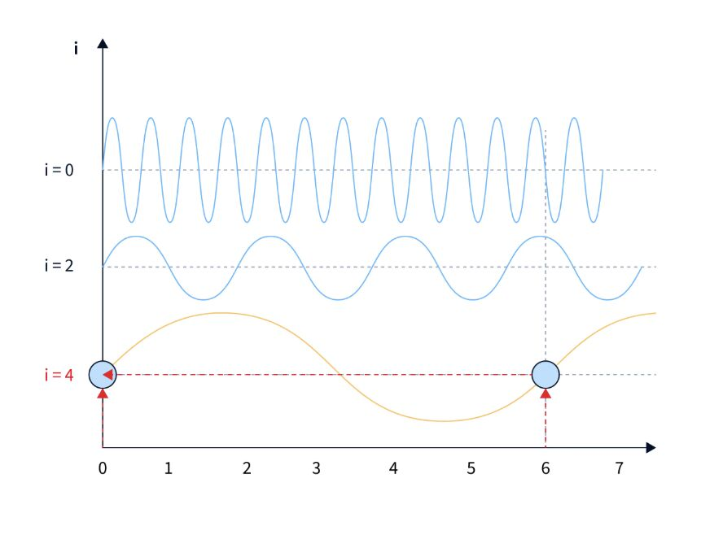
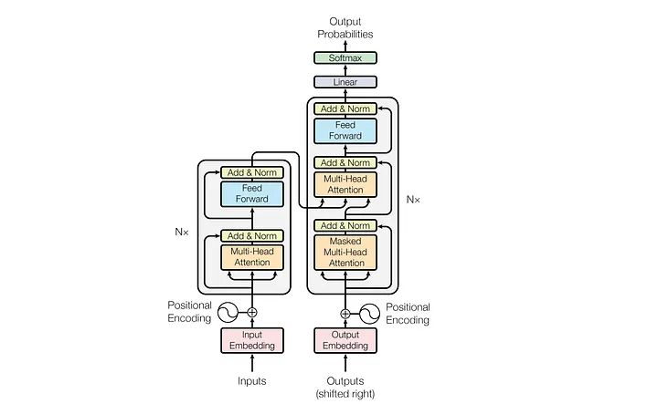
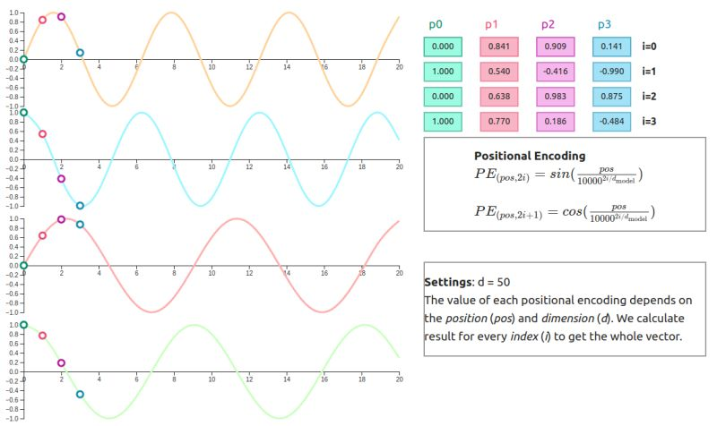

Math Behind Positional Encoding
Read post ↗

Hey! I'm Aditi Jain.
Data Scientist
I turn research into production.
Data Scientist
I turn research into production.
about me
I'm a Data Scientist at Tata 1mg, started out as a backend engineer with a knack for building stuff from the ground up. I've always loved getting my hands dirty lately that's meant data projects and playing around with AI. I like experimenting, tinkering until it works (even if it's a bit rough around the edges), and I'm dipping my toes into freelancing these days.
writing





experience
Engineered an external report digitisation pipeline using an in-house VLM, scaling to ~7 lakh reports. Built a benchmarking framework across Gemini 2.5 Flash, GPT-o3, GPT-4o, and more — driving production model selection. Currently leading Search-to-Cart A/B experiments via Mixpanel & GA.
Built the health assistant chatbot backend from scratch — 6 chat flows, session management, and a 4-stage AI-driven doctor consultation flow. Drove 2× daily footfall growth (1,000 → 2,000/day) post-launch.
Built 3–4 travel booking UI pages. Implemented multi-tenancy by restructuring database tables, cutting replication costs by 75%. Only intern to have work published on the company blog.
Built a web portal to digitise gatepass procedures using Java web forms, monitoring ingress and egress of office materials. Used iText to generate invoices for transferred items and digitised 1,000+ forms.
Engineered a blockchain ledger for transparent gasoline transportation. Deployed 4 Solidity smart contracts on Rinkeby and presented proof-of-concept to a team of professionals at GAIL.
projects
Built a structured extraction pipeline for medical entities from prescriptions, integrated with LLMs for context-aware responses and hallucination minimisation.
N8N workflow that automates job update labeling for Gmail. It triggers on new emails, uses Google Gemini to classify them as job-related and adds labels respectively
Implemented KNN and Naive Bayes from scratch, then built a CNN-based neural network to predict breast cancer from histopathology images. Includes an Explainable AI layer for model interpretability.
Currently building. Check back soon or follow me on X for updates.
speaking & community
Delivered "All About AI" — a talk on LLMs and AI in healthcare to IIMT University students.
Spoke on collaborative problem solving and women in tech, sharing applied AI work from Tata 1mg.
Delivered a session on Market Analytics & Customer Insights with a hands-on data-driven campaign activity.
Mentored teams building AI solutions across healthcare, agriculture, and education.
Evaluated AR projects built by college students.
contact
Whether it's a collab, a talk invite, or just a good ML conversation — my inbox is open.